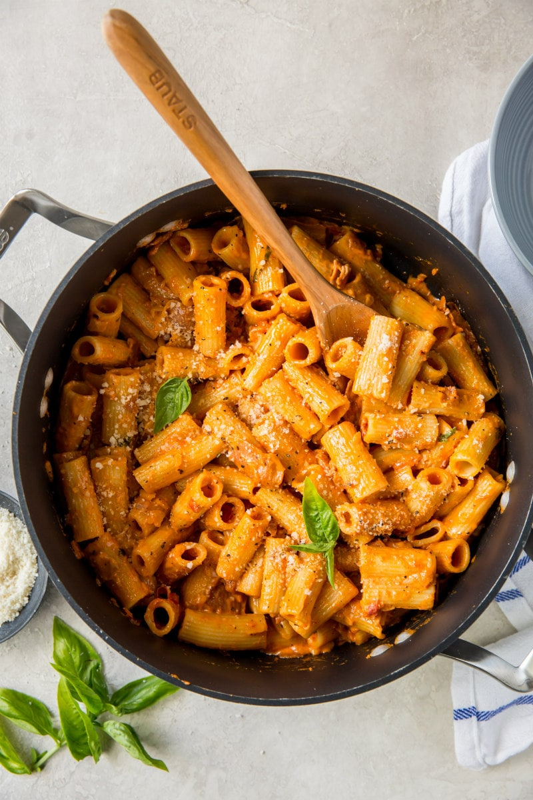

Green Curry with Tofu
Image Source: Serious Eats
:max_bytes(150000):strip_icc():format(webp)/__opt__aboutcom__coeus__resources__content_migration__serious_eats__seriouseats.com__2020__04__20200405-vodka-sauce-daniel-gritzer-33-14-8c7a6c1f212d43a8a221bc3a5a695dd6.jpg){kind=link}
Penne alla Vodka.
From Serious Eats: "Frequently served with penne, positively magical with rigatoni, this vodka sauce is a powerhouse of tomato flavor smoothed over with the silky richness of heavy cream."
Ingredients
- 3 tbsp butter
- 1 medium yellow or white onion, diced
- 3-5 cloves garlic, minced
- red pepper flakes
- One 4 1/2 oz concentrated tomato paste
- One 14 oz can crushed tomatoes oz
- 1 cup heavy cream
- 1 lb pasta, rigatoni recommended
- 1/2 cup voak (1/4 cup for the pasta, 1/4 cup for yourself)
- 4 oz Parmesean cheese
Instructions
- In a large saucepan, melt butter over medium heat. Add onions, garlic, and red pepper flakes, season lightly with salt, and cook, stirring frequently, until onions are very soft (about 10 minutes).
- Add 1/4 cup vodka, and watch it go "wooooossshhhh!" (don't forget to take your porition of the vodka, also).
- Add tomato paste and stir until tomato paste is blended in with the vegetables.
- Stir in canned tomatoes and heavy cream and bring to simmer for about 10 minutes
- Meanwhile, bring a large pot of water to a boil, add salt, then add pasta and cook until al dente (taste test along the way!).
- Once pasta has reached desired al dente state, drain them in a collander and add them directly to the saucepan.
- Mix pasta with sauce while adding in parmesean cheese.
- Enjoy!
Inspired by: Serious Eats - Penne alla Vodka